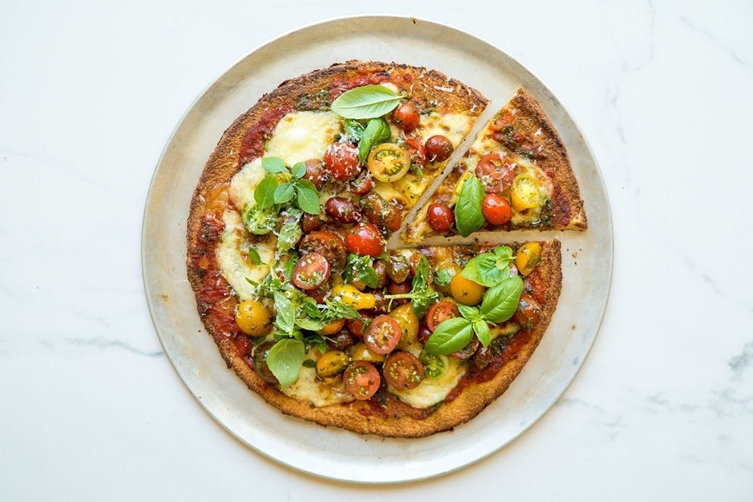

Cauliflower Pizza
Bacon and Avocado Frittata

Nutrition
- (Serves 2)
- Per serving:
- Calories: 884
- Fat: 49g
- Carbs: 29g
- Protein: 39g

Nutrition
- (Serves 4)
- Per serving:
- Calories: 467
- Fat: 38g
- Carbs: 7g
- Protein: 22g
- 60g tomato pasta sauce
- 60g green pesto
- 250g cherry tomatoes
- 100g mozzarella
- Handful basil leaves
- 1 cauliflower (about 700g)
- 1 tbsp olive oil
- 75g ground almonds
- 30g parmesan
- 2 eggs
- Preheat oven to 140 degrees Celsius.
- Roughly chop cauliflower than put in a food processor until very finely chopped.
- Put finely chopped cauliflower into clean cloth and squeeze to remove any excess water.
- Spread cauliflower out on a lined baking tray and bake for 15 minutes.
- Allow to cool and then return the cauliflower to the food processor along with the ground almonds, olive oil, parmesan, eggs and season with salt and pepper.
- Blend until a smooth dough is formed.
- Turn oven up to 180 degrees Celsius.
- Spread dough over lined baking tray to form a circle, about 1 cm in thickness. Bake for about 25 minutes or until golden brown.
- Remove from oven and spread tomato sauce and half the pesto over the pizza base. Top with the mozzarella, finely sliced.
- Roast at 250 degrees Celsius for 5-10 minutes.
- Toss tomatoes, cut into halves, along with the remaining pesto in a bowl and season with pepper.
- Top the pizza with the tomatoes and a handful of fresh basil and enjoy!
- Fry rashers on high heat until crispy. Roughly chop and set aside.
- Warm 1 tbsp oil in the pan. Beat the eggs and then mix in the rashers and season with salt and pepper. Pour the mixture into the pan.
- Cook on a low heat for 8 minutes until almost set.
- Add the avocado, cut into slices.
- Grill for 4 minutes.
- Mix the remaining oil, finely chopped chilli, vinegar and mustard in a large bowl. Toss in the salad leaves and the tomatoes cut into halves.
- Cut the frittata into wedges and serve along with the salad.